skarpa
Банк проверенных школьных задач по математике. Учитель находит нужную задачу за минуту и выдаёт задание классу, ученик решает в тренажёре и сразу видит, верно ли.
Поиск задач открыт без регистрации. Кабинеты учителя и ученика — после входа.
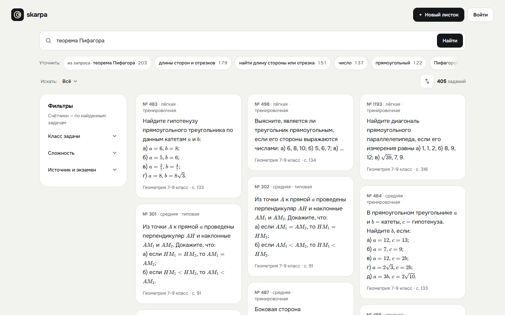
Зачем это
Подбор задач к уроку отнимает у учителя вечера: нужно пролистать несколько учебников, выбрать подходящие номера и самому проверить ответы. skarpa берёт эту работу на себя. В нём больше 72 000 задач из школьных учебников — с условием, чертежом, ответом и решением по шагам. Задачу можно найти по теме, классу или кусочку условия, а потом в один клик выдать классу.
Как выглядит
Реальные экраны сайта. Ученики и класс на них — учебные, для примера.
Поиск задач
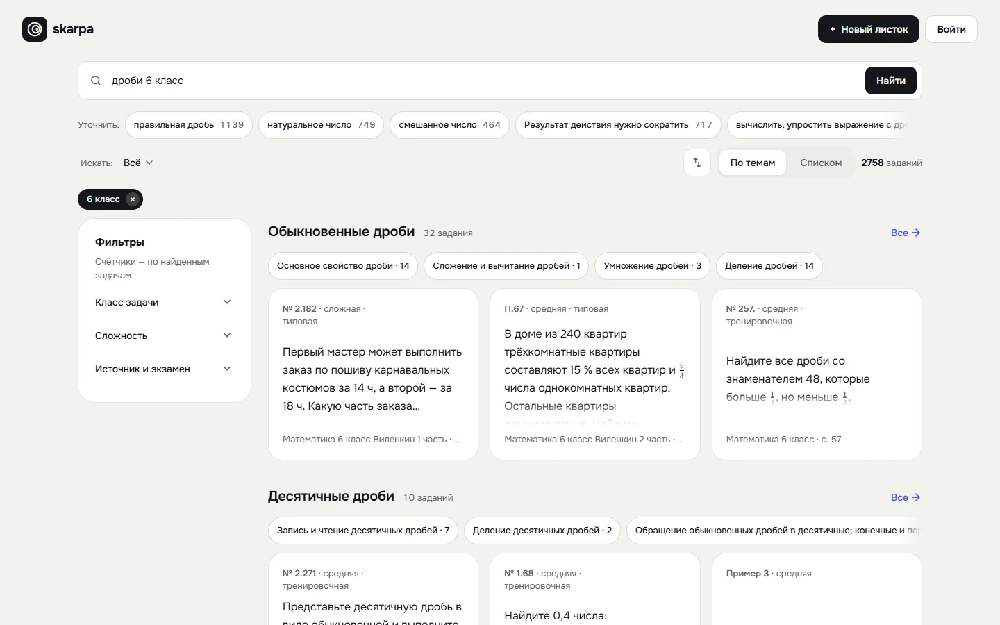
Широкий запрос сам раскладывается по темам программы 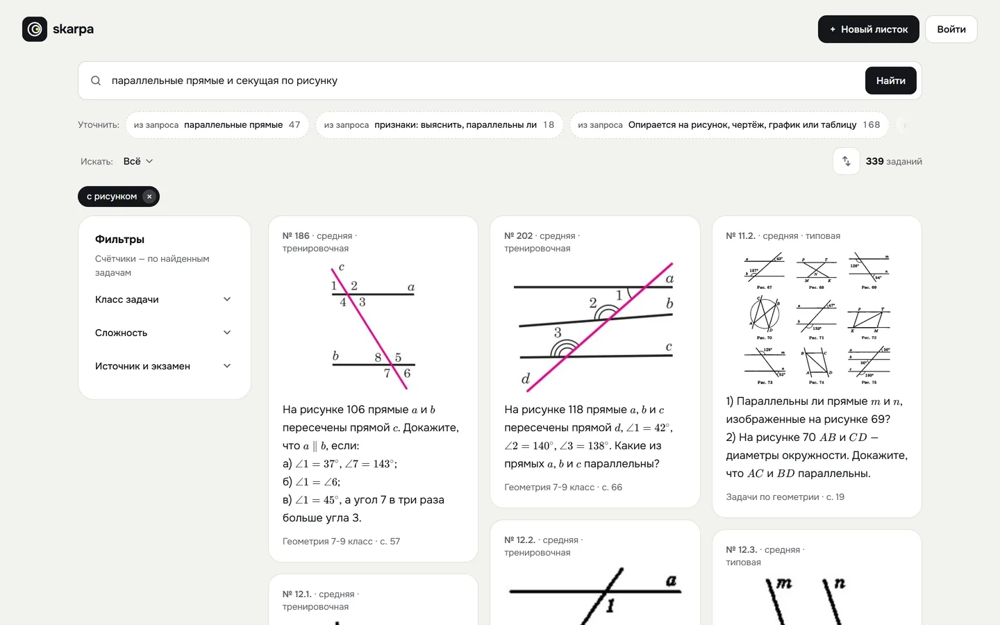
Геометрия — вместе с чертежами из учебника 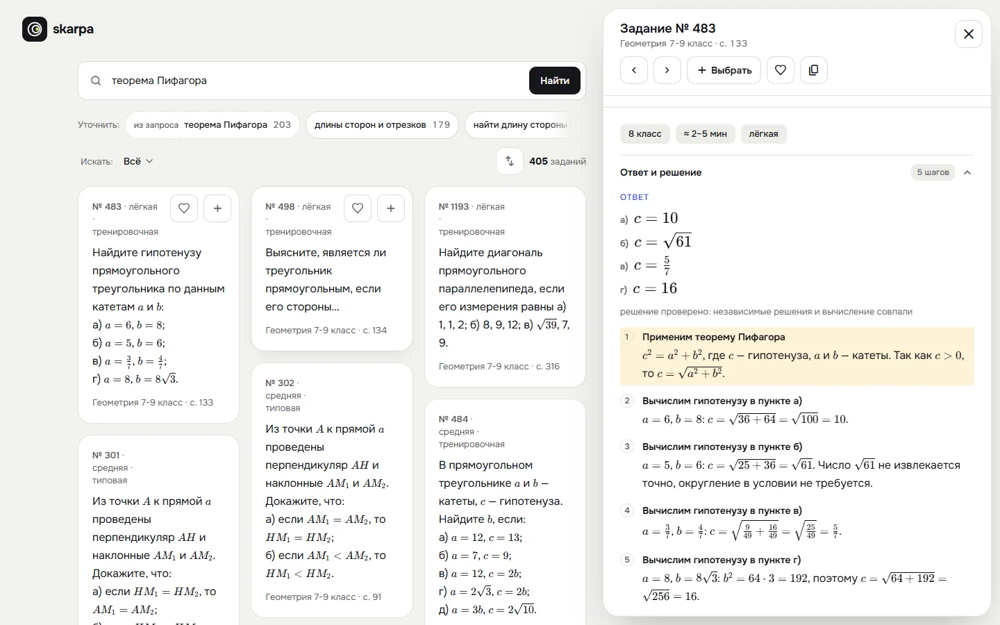
Карточка задачи: ответ и решение по шагам Результаты поиска с подсказками и фильтрами
Кабинет учителя
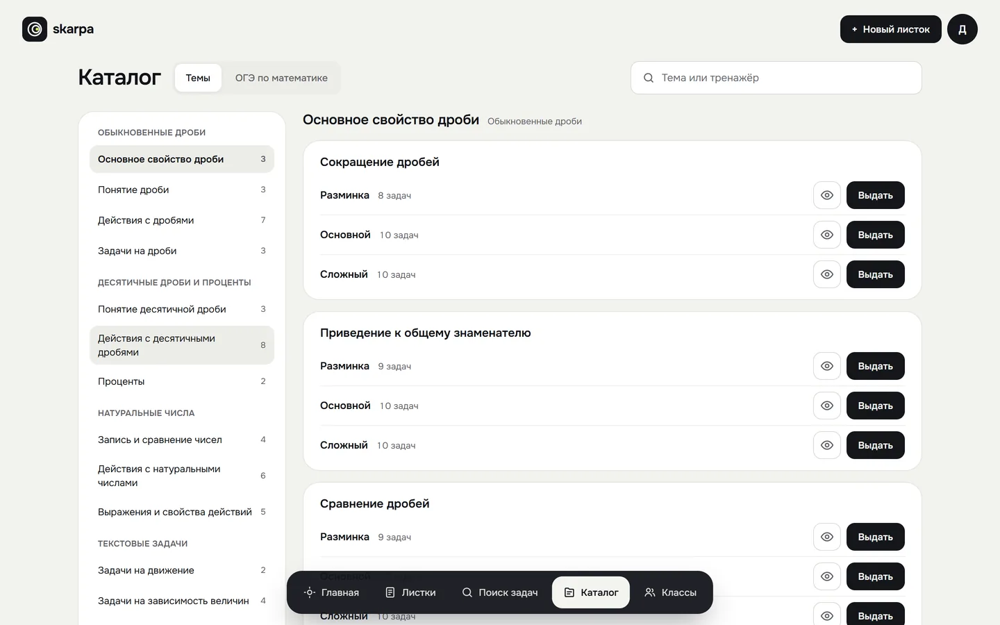
Каталог готовых тренировок: выдать классу в один клик 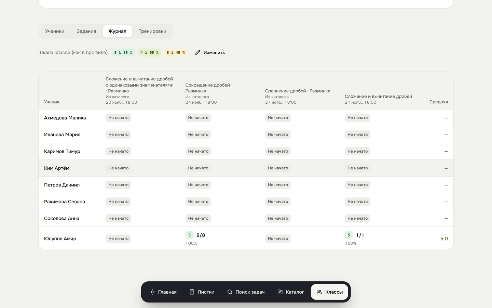
Журнал класса собирается сам 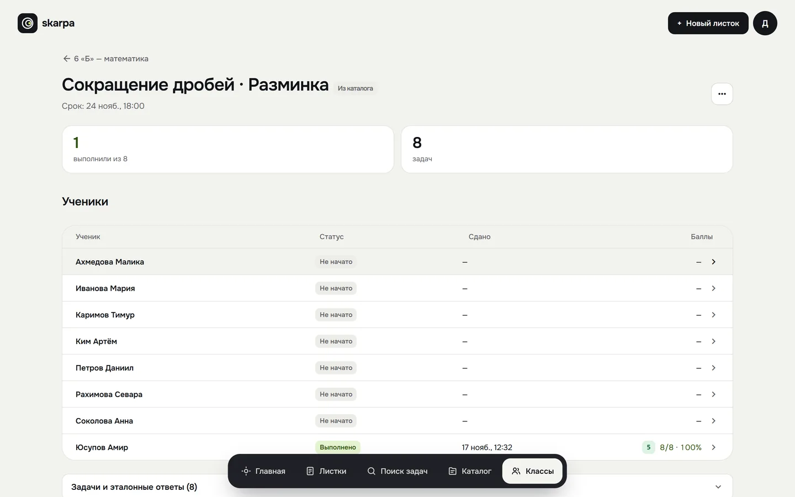
Результаты задания по каждому ученику 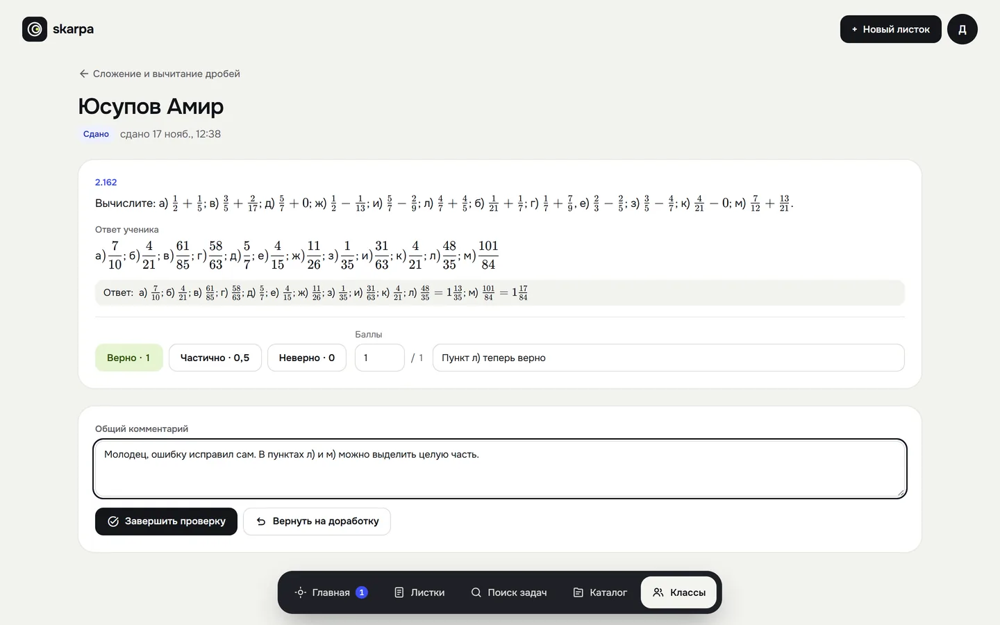
Проверка работы: ответ ученика рядом с верным
Кабинет ученика
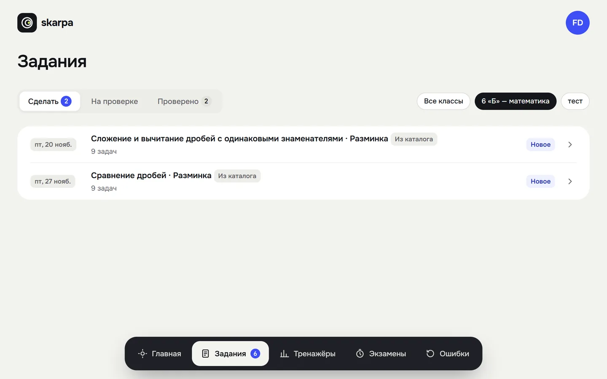
Все задания от учителя — в одном списке 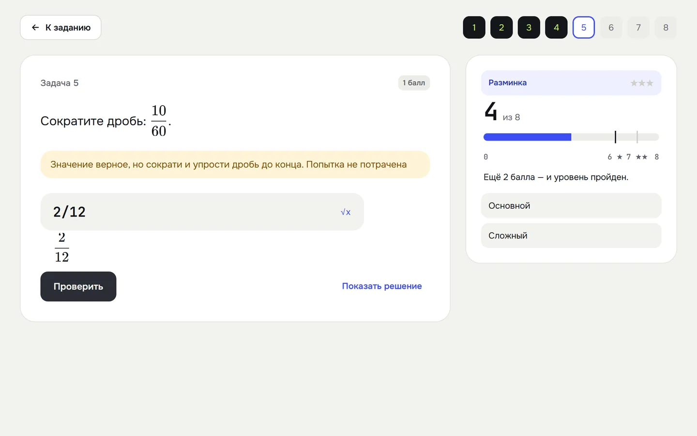
Тренажёр: ответ проверяется сразу 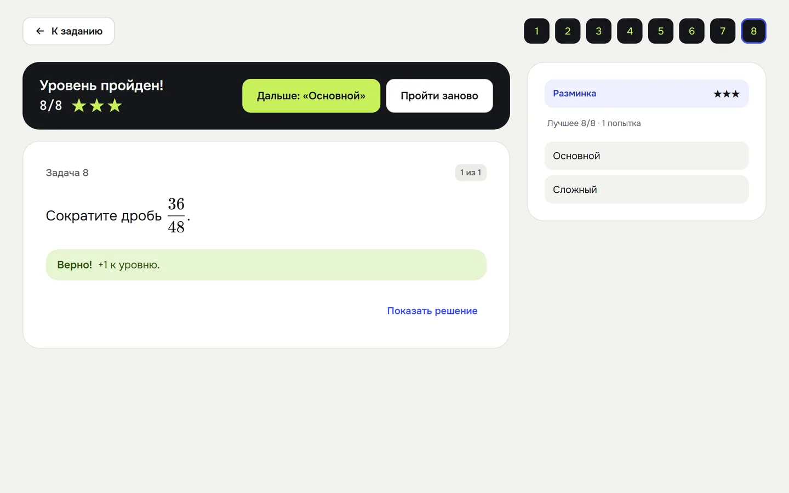
Уровень пройден — можно идти дальше 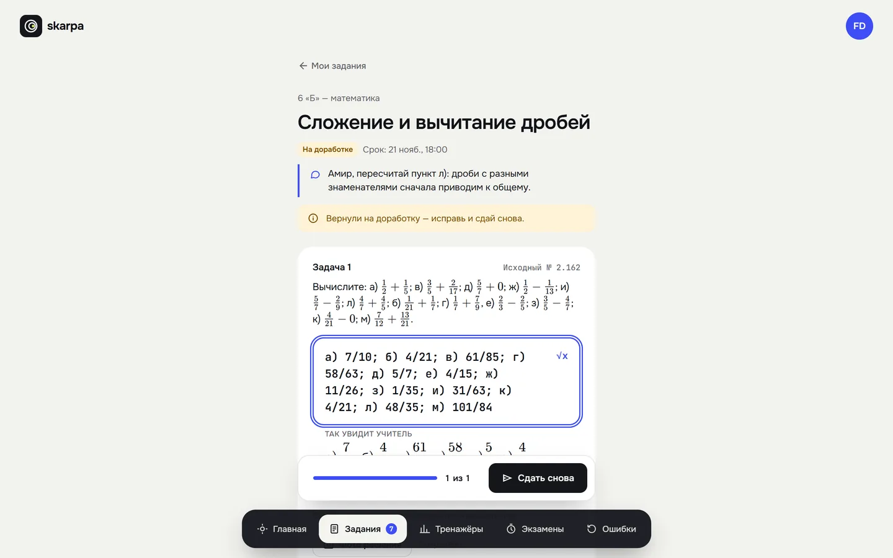
Домашняя работа: комментарий учителя и доработка
Главные фишки
-
Поиск как у коллеги
Запрос пишется обычными словами: «задачи на дроби 6 класс», «теорема Пифагора» или кусочек условия.
-
Проверенные ответы
У каждой задачи есть ответ и решение по шагам. Ответ сверяется с учебником, спорные задачи проверяются вручную.
-
Из настоящих учебников
На карточке видно, из какой книги и с какой страницы задача. Чертежи и формулы — как в оригинале.
-
Классы и задания
Ученики входят по коду класса. Учитель выдаёт задание, видит, кто его сделал, и проверяет домашние работы.
-
Тренажёры по темам
Три уровня — разминка, основной и сложный. Ответ проверяется сразу, за верные решения идут баллы и звёзды.
-
Три языка
Задачи и решения переведены: русский, английский и узбекский.
Как это работает
Три шага от страницы учебника до карточки в поиске.
-
01 · читает
Разбирает учебник
Находит на страницах задачи, набирает формулы и вырезает чертежи.
-
02 · проверяет
Решает и сверяет
Задачу решают несколько раз независимо и сравнивают ответы между собой и с книгой.
-
03 · раскладывает
Тема, класс, сложность
Проверенная задача получает метки — по ним её находит поиск и собираются тренажёры.
Задачи, в которых ответы не сошлись, в поиск не попадают, пока их не посмотрит человек.